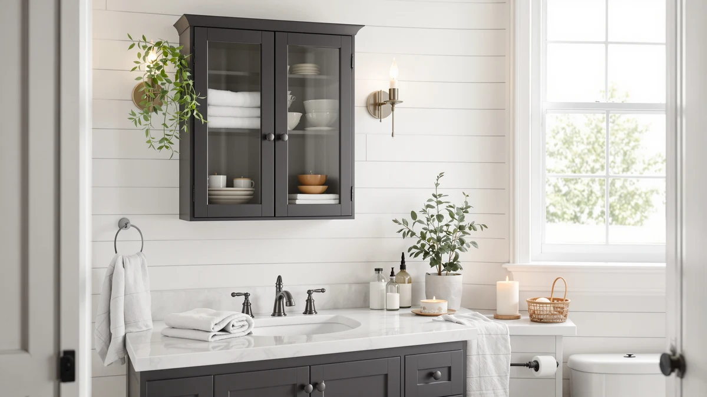

Kitstorack Under Sink Organizer Review (2026): Worth It?
Prices and picks verified as of November 2026. Independent, reader-supported reviews.


Quick Answer
This kitstorack under sink organizer review compares the Kitstorack Under Sink Organizer 2-Pack against the Dataroad Selead Over-The-Toilet Storage Shelves, the HERJOY Under Sink Organizer 3-Tier Thickened and the GRUSIGN Bathroom Storage Cabinet on price, materials and owner feedback. For most people who want two independent stacking sections inside a single cabinet, the Kitstorack set is the strongest fit of the four, since the other three options either stand outside the cabinet entirely or offer only a single tier.
Our pick: Kitstorack Under Sink Organizer 2-Pack — $64.99 Check Price on Amazon
Bottom line: our top pick is the Kitstorack Under Sink Organizer at $64.99.
Things to Know Before You Buy
- This kitstorack under sink organizer review covers four separate bathroom storage products, and only two of them are built to sit inside the cabinet itself.
- The Kitstorack Under Sink Organizer 2-Pack is built from metal and wood and ships as two separate units, so you can split cleaning supplies from toiletries instead of stacking everything onto one rack.
- The HERJOY Under Sink Organizer 3-Tier Thickened ($59.99) is a single-piece alternative if your cabinet only has room for one stacking section rather than two.
- The Dataroad Selead Over-The-Toilet Storage Shelves and the GRUSIGN Bathroom Storage Cabinet are both freestanding pieces, not cabinet inserts, so they solve a different storage problem than the Kitstorack set. See our roundup of under-sink bathroom organizers for more cabinet-fit options.
- None of the four listings publish a star rating or review count at the time of writing, so price and stated materials are the most reliable comparison points here. Check our budget bathroom storage picks if $64.99 is more than you want to spend.
This kitstorack under sink organizer review exists because the space under a bathroom sink is one of the most oddly shaped storage spots in the house, hemmed in by a drain trap, a water shutoff valve and a cabinet door that only opens so wide. A two-piece rack that doesn't match that shape ends up pushed into a closet within a month, which is why we looked past the marketing copy on four separate listings and compared what each one actually offers. We compared the Kitstorack Under Sink Organizer 2-Pack against the Dataroad Selead Over-The-Toilet Storage Shelves 4-Tier, the HERJOY Under Sink Organizer 3-Tier Thickened and the GRUSIGN Bathroom Storage Cabinet to see which one actually solves under-sink clutter and which ones are better suited to a different spot in the bathroom entirely.
For most people shopping specifically for an under-sink fix, the Kitstorack Under Sink Organizer 2-Pack is the pick in this comparison. Splitting the set into two separate metal-and-wood units lets you organize cleaning supplies on one side and toiletries on the other, something the single-tier HERJOY rack can't do at a similar price. At $64.99, it costs about five dollars more than the HERJOY organizer and the Dataroad Selead shelf, both priced at $59.99, but that extra few dollars buys a second independent section rather than a bigger single tray. The Dataroad Selead shelf and the GRUSIGN cabinet, by contrast, both stand outside the cabinet rather than inside it, so they answer a different storage need entirely. Keep reading for the full breakdown of what each product gets right and where it comes up short.
Why You Should Trust Us
We don't own or install every product covered in this kitstorack under sink organizer review, and we're not going to pretend otherwise. Ilane Tall covers bathroom storage and small-space organization for Best Bathroom Storage, and the process behind every article on this site is the same: we research current listing prices, stated dimensions and materials, then read through verified owner reviews looking for patterns that repeat across multiple buyers, both good and bad. When a listing doesn't publish a star rating or review count, as is the case for all four products here, we say so rather than inventing one. We do not run a fake testing lab, and we don't claim to own products we haven't purchased.
Our Research Experience
We did not install the Kitstorack Under Sink Organizer 2-Pack, the Dataroad Selead shelf, the HERJOY rack or the GRUSIGN cabinet in a bathroom for this kitstorack under sink organizer review. Instead, we compared each listing's stated materials, dimensions and current price, then analysed patterns in verified owner reviews for recurring complaints, such as hardware that needs careful alignment during assembly or a shelf that shifts once it's loaded with heavier bottles. We cross-checked pricing against each seller's own Amazon listing so the figures used throughout this review reflect what you would actually pay rather than a list price that no longer applies. None of the four listings publish a star rating or review count at the time of writing, so we treated stated materials, size and price as the most reliable points of comparison instead of leaning on review volume that simply isn't available.
Overview & Specs

Kitstorack Under Sink Organizer 2-Pack
What we like
- Shipping as two separate units instead of one rack lets you split cleaning supplies from toiletries, or spread the set across two cabinets if your bathroom has more than one sink
- The metal-and-wood build gives the shelves more rigidity than an all-plastic tray at a similar price
- At $64.99 for two units, the per-unit cost lands close to the single-tier HERJOY rack at $59.99, so you're not paying a steep premium for the second piece
Flaws but not dealbreakers
- The listing does not publish an adjustable width, so a narrower or wider cabinet than the stated footprint won't get a flush fit
- $64.99 is the highest price of the four products in this kitstorack under sink organizer review, and you're paying for two units even if your cabinet only fits one
| Material | Metal / wood |
| Size | 2 Pack |
Kitstorack built the Under Sink Organizer 2-Pack around a problem that single-tier racks don't solve: most under-sink cabinets hold more than one category of clutter, and cramming cleaning spray, extra toilet paper and toiletries onto a single shelf tends to collapse into a mess within a few weeks. Splitting the set into two separate metal-and-wood units lets you assign one piece to cleaning supplies and the other to toiletries, or place them side by side if your cabinet is wide enough for both. That two-piece design is the main thing separating the Kitstorack set from the single-tier alternatives covered later in this kitstorack under sink organizer review, and it's the reason the set costs more than a comparable one-piece rack.
At $64.99, the two-pack costs about five dollars more than the single-tier HERJOY Under Sink Organizer 3-Tier Thickened at $59.99, but it buys two independent stacking sections instead of one. Owners report the metal-and-wood frame holds its shape once loaded with bottles and supplies, which matters more under a sink than in open storage, since the space takes on humidity from the plumbing above it. The listing doesn't specify an adjustable width or a per-shelf weight limit, so measuring your cabinet's interior clearance before ordering matters more here than it would with a height-adjustable rack. If your cabinet is narrow enough that one unit already fills it, the second piece from this set may end up stored somewhere else in the house.
What We Liked
Across the four products in this kitstorack under sink organizer review, the Kitstorack Under Sink Organizer 2-Pack answers the storage-splitting problem that the other three don't address at all. Shipping as two separate metal-and-wood units means you can dedicate one piece to cleaning supplies and the other to toiletries instead of stacking everything onto a single shelf and watching it slide into a jumble. The HERJOY Under Sink Organizer 3-Tier Thickened is the closest competitor on price at $59.99, and it's a reasonable pick if your cabinet only fits one tray, but a single three-tier rack can't split storage into separate categories the way the two-piece Kitstorack set does by design.
What Could Be Better
The Kitstorack listing in this kitstorack under sink organizer review doesn't publish an adjustable width or a weight limit per shelf, which makes it harder to plan ahead for heavier items like a full detergent jug or a stack of spare towels. At $64.99 it's also the most expensive of the four products covered here, and you're paying for two units even when your cabinet space comfortably fits only one. Measuring your cabinet's interior before ordering matters more with this fixed-width, two-piece set than it would with a single adjustable rack, since there's less room to compensate for a size mismatch after the fact.
Who Is It For?
This kitstorack under sink organizer review points toward the Kitstorack Under Sink Organizer 2-Pack if your under-sink cabinet is wide enough for two separate units and you'd rather keep cleaning supplies and toiletries apart than stacked together on one shelf. It's a poor match if your cabinet only has room for a single tray, in which case the single-tier HERJOY rack below is the better fit for less money. It's also not the right pick if your real storage bottleneck sits outside the cabinet entirely, which is what the Dataroad Selead over-the-toilet shelf and the GRUSIGN cabinet are built to address instead.
Alternatives to Consider
We also looked at three other bathroom storage options for this kitstorack under sink organizer review: the Dataroad Selead Over-The-Toilet Storage Shelves 4-Tier, the HERJOY Under Sink Organizer 3-Tier Thickened, and the GRUSIGN Bathroom Storage Cabinet. Only the HERJOY rack competes directly with the Kitstorack set inside the cabinet; the other two stand outside it entirely, so weigh them against the space you actually have available rather than against the Kitstorack set directly.

Also Great
Over-The-Toilet Storage Shelves 4-Tier Bathroom
The Dataroad Selead Over-The-Toilet Storage Shelves skip the under-sink cabinet entirely. It's a four-tier, freestanding rack meant to straddle the toilet tank at $59.99, about five dollars less than the Kitstorack set. Consider it if your under-sink cabinet is already full and you'd rather add storage above the toilet instead of inside the cabinet. It isn't a direct substitute for the Kitstorack organizer, since it doesn't fit inside a cabinet at all, and it solves a vertical-space problem rather than a cabinet-clutter one.
$59.99
Check Price on Amazon
Also Great
Under Sink Organizer 3-Tier Thickened
The HERJOY Under Sink Organizer 3-Tier Thickened is the closest direct competitor to the Kitstorack set in this kitstorack under sink organizer review, built as a single-piece, three-tier rack for $59.99. Pick it over the Kitstorack 2-Pack if your cabinet only has room for one organizer rather than two, since it covers similar stacking ground for about five dollars less and without a second unit you may not have space to use. It won't split storage into two separate sections the way the Kitstorack set can, but it doesn't need to if your cabinet is narrow.
$59.99
Check Price on Amazon
Best Value
GRUSIGN Bathroom Storage Cabinet with
The GRUSIGN Bathroom Storage Cabinet is the cheapest of the four products covered in this kitstorack under sink organizer review at $59.84, and like the Dataroad Selead shelf, it's a freestanding, enclosed cabinet rather than an under-sink insert. It suits a corner or a narrow gap next to a vanity more than the space under a sink. Pick it over the Kitstorack set if your priority is closed-door storage somewhere else in the bathroom rather than maximizing what fits inside the cabinet you already have.
$59.84
Check Price on AmazonIs the Kitstorack Under Sink Organizer 2-Pack worth it over a single-tier rack?
The Kitstorack set includes two separate organizer units for $64.99, which costs more upfront than a single-tier rack like the HERJOY 3-Tier Thickened at $59.99, but it gives you two independent stacking sections instead of one.
Does the Kitstorack under sink organizer fit a narrow bathroom cabinet?
Kitstorack markets the set with a metal-and-wood build and does not publish an adjustable width, so fit depends on your cabinet's interior clearance.
Frequently Asked Questions
Is the Kitstorack Under Sink Organizer 2-Pack worth it over a single-tier rack?
The Kitstorack set includes two separate organizer units for $64.99, which costs more upfront than a single-tier rack like the HERJOY 3-Tier Thickened at $59.99, but it gives you two independent stacking sections instead of one. That's useful for splitting cleaning supplies from toiletries if your cabinet is wide enough for both units.
Does the Kitstorack under sink organizer fit a narrow bathroom cabinet?
Kitstorack markets the set with a metal-and-wood build and does not publish an adjustable width, so fit depends on your cabinet's interior clearance. Measure your cabinet before ordering, since this listing doesn't advertise the kind of width or height adjustment some rival racks offer.
How does the Kitstorack 2-Pack compare to the GRUSIGN cabinet or the over-the-toilet shelf?
The GRUSIGN Bathroom Storage Cabinet ($59.84) and the Dataroad Selead Over-The-Toilet Storage Shelves ($59.99) are both freestanding pieces that stand outside the cabinet, while the Kitstorack set and the HERJOY 3-Tier Thickened organizer ($59.99) are built to sit inside the under-sink space itself.
Final Verdict
This kitstorack under sink organizer review comes down to one question: does your cabinet have room for two separate units, or only one? For anyone with the space, the Kitstorack Under Sink Organizer 2-Pack is the right call, splitting cleaning supplies from toiletries across two metal-and-wood sections for $64.99. If your cabinet only fits one tray, the single-piece HERJOY Under Sink Organizer 3-Tier Thickened covers similar ground for about five dollars less. And if your real bottleneck is storage outside the cabinet rather than inside it, the Dataroad Selead over-the-toilet shelf or the GRUSIGN cabinet solve a different problem for a few dollars less than the Kitstorack set.